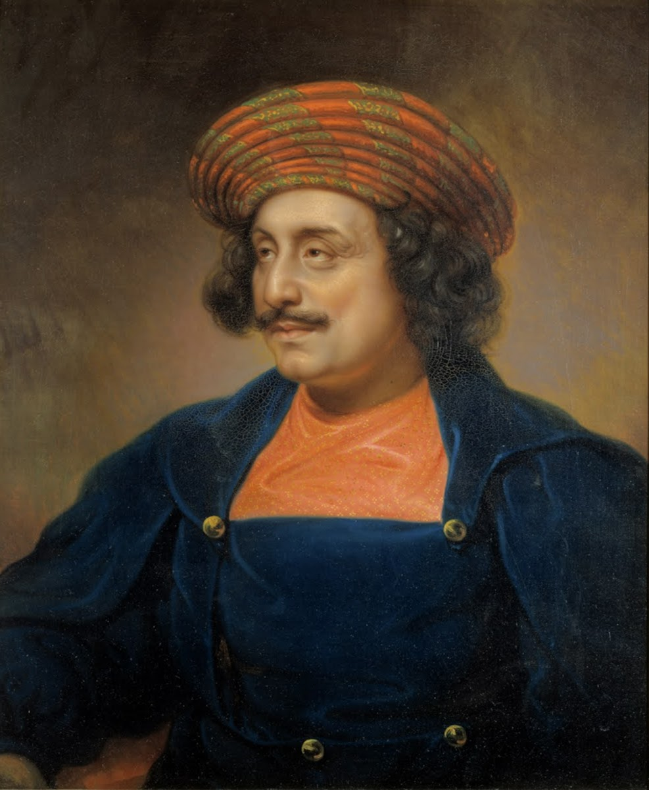
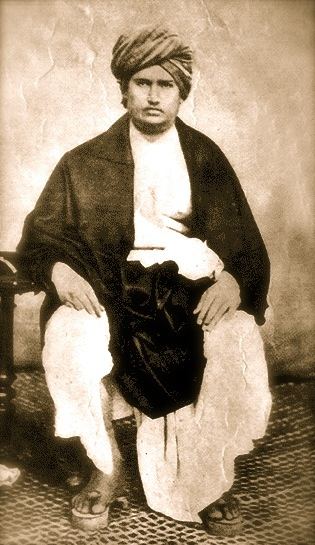
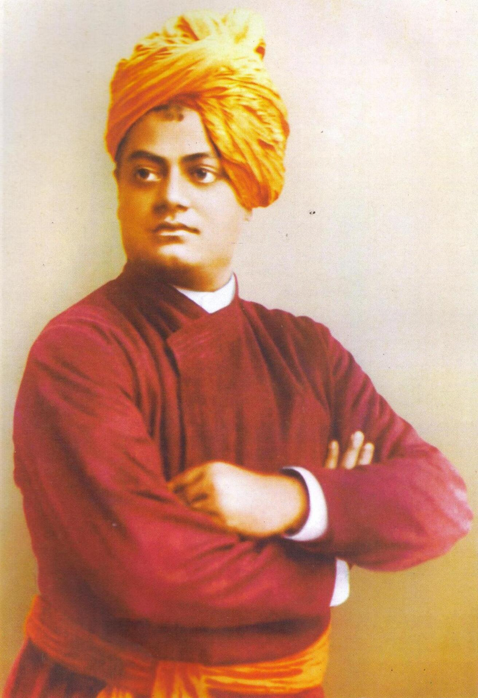
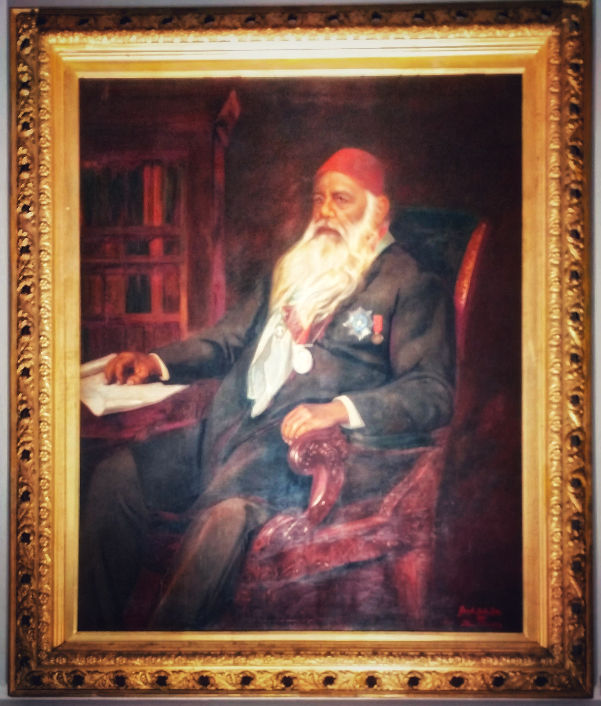

The 19th-century reform movements took two broad approaches. BPSC asks you to identify which stream a reformer belongs to.
| Stream | Approach | Key Reformers |
|---|---|---|
| 1. Reformist (Within tradition) | Reform from within — reinterpret scriptures rationally; accept Western rationalism; oppose superstition but stay in own faith | Ram Mohan Roy (Brahmo Samaj), Vidyasagar, Ranade (Prarthana Samaj), Sir Syed (Aligarh) |
| 2. Revivalist (Back to roots) | Return to "pure" original scriptures; reject later accretions; anti-Western; assertive | Dayananda (Arya Samaj, "Back to the Vedas"), Vivekananda (Ramakrishna Mission), Theosophists |

| Reformer | Organisation (Year) | Book / Journal | Key Idea |
|---|---|---|---|
| Raja Ram Mohan Roy | Brahmo Samaj (1828) | Tuhfat-ul-Muwahhidin; Precepts of Jesus; Sambad Kaumudi (journal) | "Father of Indian Renaissance"; anti-Sati; monotheism; rationalism |
| Debendranath Tagore | Tattwabodhini Sabha (1839); merged with Brahmo 1842 | Tattwabodhini Patrika (1843) | Systematised Brahmo doctrine; father of Rabindranath |
| Keshab Chandra Sen | Brahmo Samaj of India (1866 split) | Indian Mirror; Sangam | Radical wing; formed Indian National Conference (1883) → merged with INC 1885 |
| Ishwar Chandra Vidyasagar | (No organisation; individual reformer) | BShit Bidhaba Bishesh (on widow remarriage) | Widow Remarriage Act (1856); women's education; Bengali prose reformer |
| Swami Dayananda Saraswati | Arya Samaj (1875, Bombay) | Satyarth Prakash (1875) | "Back to the Vedas" (krinvanto vishwam aryam); anti-idolatry, anti-caste, Shuddhi |
| Swami Vivekananda | Ramakrishna Mission (1897, Belur Math) | Chicago Address (1893); Raja Yoga; Jnana Yoga | Vedanta; Chicago Parliament of Religions 1893; "Sisters and Brothers of America" |
| Jyotirao Phule | Satyashodhak Samaj (1873, Pune) | Gulamgiri (1871); Shetkaryacha Asud | Anti-caste; Shudra/Ati-Shudra liberation; wife Savitribai opened first girls' school (Pune, 1848) |
| Sir Syed Ahmad Khan | Muhammadan Anglo-Oriental College (1875) → AMU (1920); Aligarh Movement | Tahzib-ul-Akhlaq (journal, 1870) | Modern Western education for Muslims; loyalist post-1857; "Two Nation" precursor |
| Annie Besant | Theosophical Society (Adyar HQ from 1886; she joined 1889); Central Hindu College (1898) | Wake Up India; The Theosophist | Theosophy; Indian self-rule; Congress President 1917; Home Rule League 1916 |
| Gopal Krishna Gokhale | Servants of India Society (1905, Poona) | — | Secular social service; Gandhi's political guru |
| Sri Narayana Guru | SNDP Yogam (1903, Kerala) | — | "One caste, one religion, one God for mankind"; Ezhava uplift; Aruvippuram Shiva temple (1888) |



| Year | Act / Measure | Reformer Behind It |
|---|---|---|
| 1829 | Sati abolition (Regulation XVII) — Lord William Bentinck | Raja Ram Mohan Roy (campaigned) |
| 1835 | English as medium of higher education (Macaulay's Minute) | Lord Bentinck; Macaulay |
| 1856 | Hindu Widows' Remarriage Act | Ishwar Chandra Vidyasagar; Lord Dalhousie |
| 1872 | First Civil Marriage Act (Special Marriage Act, Act III) | Inspired by Brahmo Samaj petitions |
| 1891 | Age of Consent Act (raised marriage age to 12) | Behramji Malabari; Ilbert Bill era |
| 1929 | Sharda Act / Child Marriage Restraint Act (girls 14, boys 18) | Harbilas Sarda; Viceroy Lord Irwin |
From Brahmo Samaj (1828) to the Sharda Act (1929) — a century of reform.
| Item | Value | Notes |
|---|---|---|
| Brahmo Samaj | 1828, Calcutta | Ram Mohan Roy; "Father of Indian Renaissance" |
| Sati abolition | 1829, Regulation XVII | Bentinck; Roy's campaign |
| Widow Remarriage Act | 1856 | Vidyasagar; drafted by Dalhousie |
| Satyarth Prakash | 1875 | Dayananda Saraswati; "Back to the Vedas" |
| Arya Samaj | 1875, Bombay | Dayananda; Shuddhi, anti-caste |
| Satyashodhak Samaj | 1873, Pune | Jyotirao Phule; anti-Brahminical caste |
| MAO College, Aligarh | 1875 | Sir Syed Ahmad Khan; → AMU 1920 |
| Ramakrishna Mission | 1897, Belur Math | Vivekananda; Chicago address 1893 |
| Theosophical Society (India) | Adyar HQ 1886 | Blavatsky & Olcott (NY 1875); Annie Besant joined 1889 |
| Prarthana Samaj | 1867, Bombay | Atmaram Pandurang; led by Ranade |
| Servants of India Society | 1905, Poona | Gokhale; secular social service |
| SNDP Yogam | 1903, Kerala | Sri Narayana Guru; Ezhava uplift |
| Sharda Act | 1929 | Child Marriage Restraint Act; girls 14, boys 18; Viceroy Irwin |